STAT 159 Final Project - Group 22#
A three-year dataset supporting research on building energy management and occupancy analytics#
Research Question: How is the energy consumption of the building influenced by various factors?
Authors: Aoyu, Emma, Hamsa, Reuel
Introduction#
In this notebook, we are providing the functions and code we used to conduct the analysis in the main notebook.
C02 Emissions Hourly
import os
import glob
import matplotlib.pyplot as plt
import datetime as dt
import pandas as pd
import numpy as np
from tools import timeseries as ts
# Plot the co2 rate hourly on June 1
data1 = ts.retrieve('2020-06-01 00:00:00', '2020-06-02 00:00:00', 'zone_co2.csv')
hourly1 = ts.hourly('2020-06-01 00:00:00', '2020-06-02 00:00:00', data1)
plt.plot(hourly1['date'], hourly1['zone_022_co2'])
plt.xlabel('Time')
plt.ylabel('C02 (ppm)')
plt.title("Hourly C02 Emissions - June 1 2020")
plt.show()
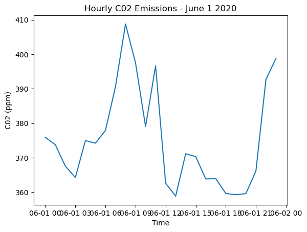
# Plot the co2 rate hourly on June 2
data2 = ts.retrieve('2020-06-02 00:00:00', '2020-06-03 00:00:00', 'zone_co2.csv')
hourly2 = ts.hourly('2020-06-02 00:00:00', '2020-06-03 00:00:00', data2)
plt.plot(hourly2['date'], hourly2['zone_022_co2'])
plt.xlabel('Time')
plt.ylabel('C02 (ppm)')
plt.title("Hourly C02 Emissions - June 2 2020")
plt.show()
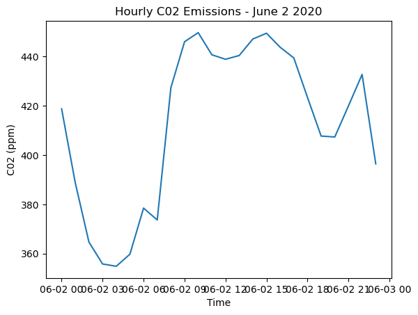
# Plot the co2 rate hourly on June 3
data3 = ts.retrieve('2020-06-03 00:00:00', '2020-06-04 00:00:00', 'zone_co2.csv')
hourly3 = ts.hourly('2020-06-03 00:00:00', '2020-06-04 00:00:00', data3)
plt.plot(hourly3['date'], hourly3['zone_022_co2'])
plt.xlabel('Time')
plt.ylabel('C02 (ppm)')
plt.title("Hourly C02 Emissions - June 3 2020")
plt.show()
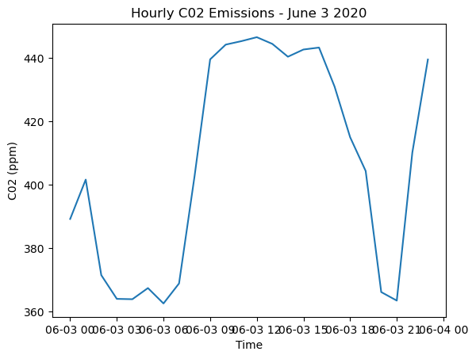
# Plot the co2 rate hourly on December 1
data_dec = ts.retrieve('2020-12-01 00:00:00', '2020-12-05 00:00:00', 'zone_co2.csv')
hourly_dec1 = ts.hourly('2020-12-01 00:00:00', '2020-12-02 00:00:00', data_dec)
plt.plot(hourly_dec1['date'], hourly_dec1['zone_022_co2'])
plt.xlabel('Time')
plt.ylabel('C02 (ppm)')
plt.title("Hourly C02 Emissions - Dec. 1 2020")
plt.show()
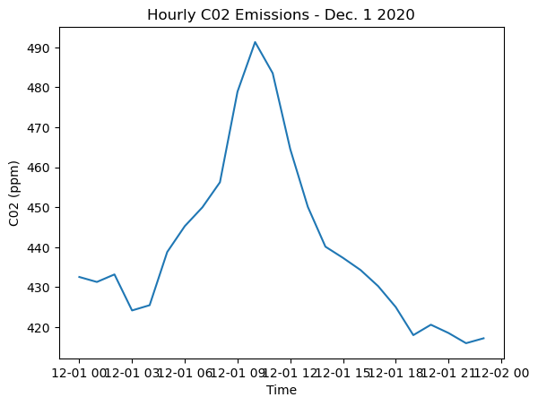
# Plot the co2 rate hourly on December 2
hourly_dec1 = ts.hourly('2020-12-02 00:00:00', '2020-12-03 00:00:00', data_dec)
plt.plot(hourly_dec1['date'], hourly_dec1['zone_022_co2'])
plt.xlabel('Time')
plt.ylabel('C02 (ppm)')
plt.title("Hourly C02 Emissions - Dec. 2 2020")
plt.show()
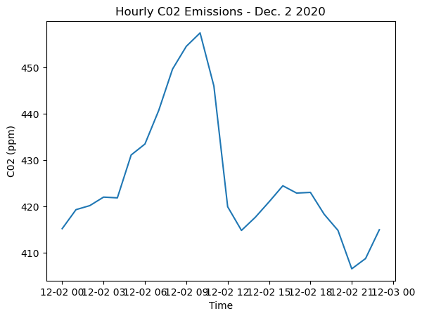
# Plot the co2 rate hourly on December 3
hourly_dec1 = ts.hourly('2020-12-03 00:00:00', '2020-12-04 00:00:00', data_dec)
plt.plot(hourly_dec1['date'], hourly_dec1['zone_022_co2'])
plt.xlabel('Time')
plt.ylabel('co2')
plt.title("Hourly C02 Emissions - Dec. 3 2020")
plt.show()
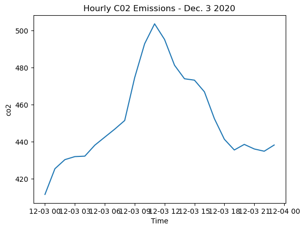
Occupancy level and outdoor weather impact on energy consumption
weather_data = ts.retrieve('2018-08-10 00:00:00', '2018-08-17 00:00:00', 'site_weather.csv')
hourly_data = ts.rtu_energy_hourly('2018-08-10 00:00:00', '2018-08-17 00:00:00', 3)
daily_data = ts.rtu_energy_daily('2018-08-10 00:00:00', '2018-08-17 00:00:00', 3)
---------------------------------------------------------------------------
KeyboardInterrupt Traceback (most recent call last)
Cell In[10], line 1
----> 1 daily_data = ts.rtu_energy_daily('2018-08-10 00:00:00', '2018-08-17 00:00:00', 3)
File ~/project-project-group22/tools/timeseries.py:281, in rtu_energy_daily(start, end, unit)
279 end_next = datetime.strptime(start, "%Y-%m-%d %H:%M:%S").replace(tzinfo=timezone) + interval
280 end_next = datetime.strftime(end_next, "%Y-%m-%d %H:%M:%S")
--> 281 value = rtu_energy_hourly(start, end_next, unit).sum(numeric_only=True)
282 date = pd.Series({'date': start}, dtype='datetime64[ns]')
283 value_df = pd.concat([value_df, pd.DataFrame(value).transpose()], axis = 0)
File ~/project-project-group22/tools/timeseries.py:237, in rtu_energy_hourly(start, end, unit)
234 sat_data = retrieve(start, end, 'rtu_sa_t.csv')
235 sat_hourly = hourly(start, end, sat_data)[['date', sat_name]]
--> 237 afr_data = retrieve(start, end, 'rtu_sa_fr.csv')
238 afr_hourly = hourly(start, end, afr_data)[['date', afr_name]]
240 temp_hourly = pd.merge(left=ma_hourly, right=sat_hourly, left_on='date', right_on='date')
File ~/project-project-group22/tools/timeseries.py:59, in retrieve(start, end, data)
57 path = 'clean_data'
58 path = os.path.join(path, data)
---> 59 data = pd.read_csv(path)
60 elif isinstance(data, pd.DataFrame):
61 data = data
File /srv/conda/envs/notebook/lib/python3.10/site-packages/pandas/util/_decorators.py:211, in deprecate_kwarg.<locals>._deprecate_kwarg.<locals>.wrapper(*args, **kwargs)
209 else:
210 kwargs[new_arg_name] = new_arg_value
--> 211 return func(*args, **kwargs)
File /srv/conda/envs/notebook/lib/python3.10/site-packages/pandas/util/_decorators.py:331, in deprecate_nonkeyword_arguments.<locals>.decorate.<locals>.wrapper(*args, **kwargs)
325 if len(args) > num_allow_args:
326 warnings.warn(
327 msg.format(arguments=_format_argument_list(allow_args)),
328 FutureWarning,
329 stacklevel=find_stack_level(),
330 )
--> 331 return func(*args, **kwargs)
File /srv/conda/envs/notebook/lib/python3.10/site-packages/pandas/io/parsers/readers.py:950, in read_csv(filepath_or_buffer, sep, delimiter, header, names, index_col, usecols, squeeze, prefix, mangle_dupe_cols, dtype, engine, converters, true_values, false_values, skipinitialspace, skiprows, skipfooter, nrows, na_values, keep_default_na, na_filter, verbose, skip_blank_lines, parse_dates, infer_datetime_format, keep_date_col, date_parser, dayfirst, cache_dates, iterator, chunksize, compression, thousands, decimal, lineterminator, quotechar, quoting, doublequote, escapechar, comment, encoding, encoding_errors, dialect, error_bad_lines, warn_bad_lines, on_bad_lines, delim_whitespace, low_memory, memory_map, float_precision, storage_options)
935 kwds_defaults = _refine_defaults_read(
936 dialect,
937 delimiter,
(...)
946 defaults={"delimiter": ","},
947 )
948 kwds.update(kwds_defaults)
--> 950 return _read(filepath_or_buffer, kwds)
File /srv/conda/envs/notebook/lib/python3.10/site-packages/pandas/io/parsers/readers.py:611, in _read(filepath_or_buffer, kwds)
608 return parser
610 with parser:
--> 611 return parser.read(nrows)
File /srv/conda/envs/notebook/lib/python3.10/site-packages/pandas/io/parsers/readers.py:1778, in TextFileReader.read(self, nrows)
1771 nrows = validate_integer("nrows", nrows)
1772 try:
1773 # error: "ParserBase" has no attribute "read"
1774 (
1775 index,
1776 columns,
1777 col_dict,
-> 1778 ) = self._engine.read( # type: ignore[attr-defined]
1779 nrows
1780 )
1781 except Exception:
1782 self.close()
File /srv/conda/envs/notebook/lib/python3.10/site-packages/pandas/io/parsers/c_parser_wrapper.py:232, in CParserWrapper.read(self, nrows)
230 chunks = self._reader.read_low_memory(nrows)
231 # destructive to chunks
--> 232 data = _concatenate_chunks(chunks)
234 else:
235 data = self._reader.read(nrows)
File /srv/conda/envs/notebook/lib/python3.10/site-packages/pandas/io/parsers/c_parser_wrapper.py:402, in _concatenate_chunks(chunks)
390 result[name] = array_type._concat_same_type(
391 arrs # type: ignore[arg-type]
392 )
393 else:
394 # error: Argument 1 to "concatenate" has incompatible
395 # type "List[Union[ExtensionArray, ndarray[Any, Any]]]"
(...)
400 # , Sequence[Sequence[Sequence[Sequence[
401 # _SupportsArray[dtype[Any]]]]]]]"
--> 402 result[name] = np.concatenate(arrs) # type: ignore[arg-type]
404 if warning_columns:
405 warning_names = ",".join(warning_columns)
File <__array_function__ internals>:180, in concatenate(*args, **kwargs)
KeyboardInterrupt:
occupancy = ts.retrieve('2018-08-10 00:00:00', '2018-08-17 00:00:00', 'occ.csv')
ts.ts_plot(occupancy, ['occ_third_south', 'occ_fourth_south'], [8, 5], separate = False)
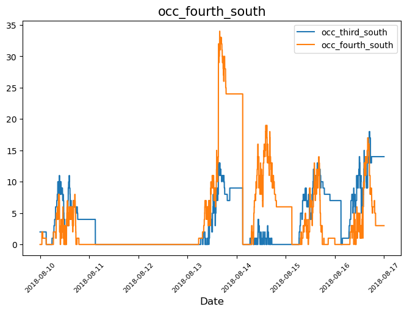
ts.ts_plot(weather_data, ['air_temp_set_1', 'solar_radiation_set_1'], [8, 8], separate = True)
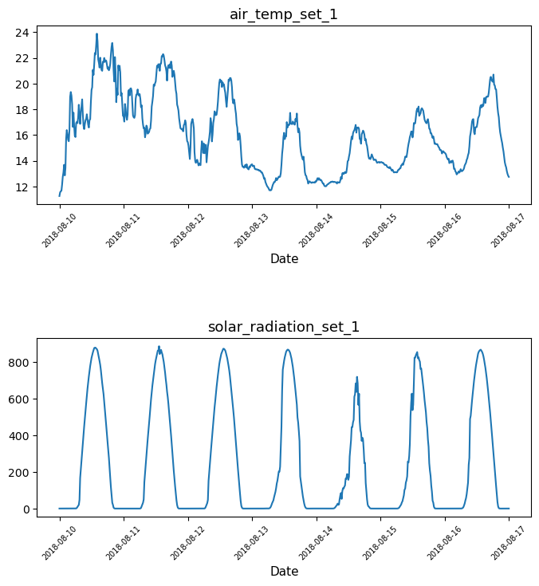
meter = ts.retrieve('2018-08-10 00:00:00', '2018-08-17 00:00:00', 'ele.csv')
meter_hourly = ts.hourly('2018-08-10 00:00:00', '2018-08-17 00:00:00', meter)
ts.ts_plot(meter_hourly, ['lig_S', 'hvac_N', 'hvac_S'], [8, 5], separate = False)
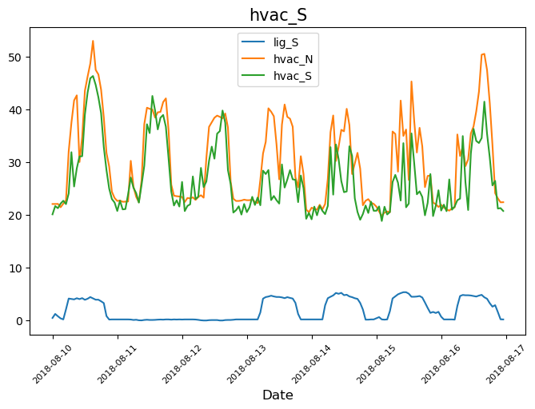
ts.ts_plot(hourly_data, ['energy_kw'], [8, 5], separate = True)
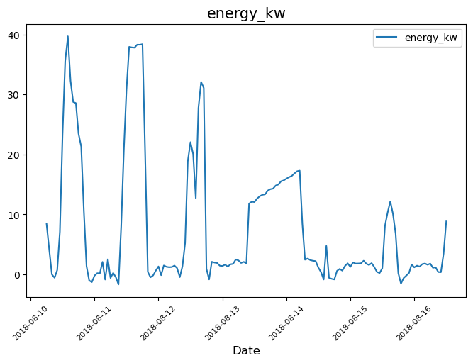
ts.ts_plot(daily_data, ['energy_kw'], [8, 5], separate = True)
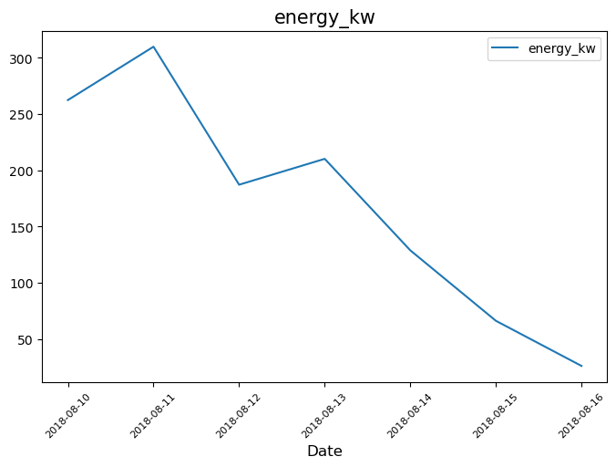
Comparing co2 emission to interior temperature
int_temp = ts.retrieve('2020-07-01 00:00:00', '2020-08-01 00:00:00', 'zone_temp_interior.csv')
co2 = ts.retrieve('2020-07-01 00:00:00', '2020-08-01 00:00:00', 'zone_co2.csv')
ele = ts.retrieve('2020-07-01 00:00:00', '2020-08-01 00:00:00', 'ele.csv')
hourly_co2 = ts.hourly('2020-07-01 00:00:00', '2020-08-01 00:00:00', co2)
co2_mean = ts.avg_data(hourly_co2, 'average co2')
plt.plot(co2_mean['date'], co2_mean['average co2'])
plt.ylabel('average co2')
plt.xlabel('date')
plt.title('Hourly average Carbon emission in the month of July 2020');
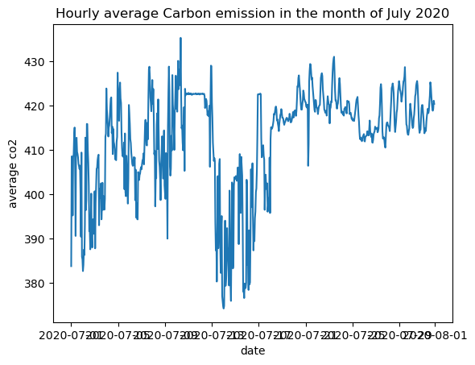
plt.plot(co2_mean['date'].head(24), co2_mean['average co2'].head(24))
plt.ylabel('average co2')
plt.xlabel('date')
plt.title('Hourly average Carbon emission on July 1st 2020');
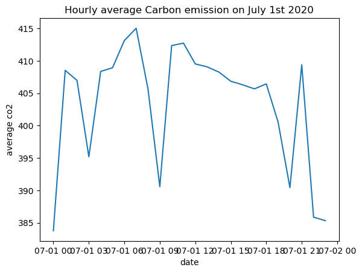
hourly_int_temp = ts.hourly('2020-07-01 00:00:00', '2020-08-01 00:00:00', int_temp)
int_temp_mean = ts.avg_data(hourly_int_temp, 'average interior temperature')
plt.plot(int_temp_mean['date'], int_temp_mean['average interior temperature'])
plt.ylabel('average interior temperature')
plt.xlabel('date')
plt.title('Average Hourly interior temperature in the month of July 2020');
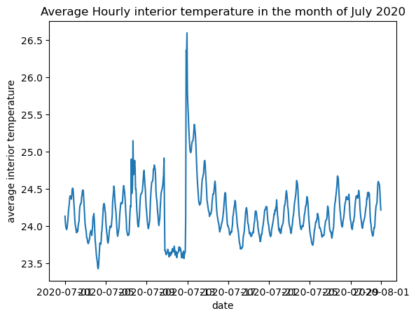
plt.plot(int_temp_mean['date'].head(24), int_temp_mean['average interior temperature'].head(24))
plt.ylabel('average temp')
plt.xlabel('date')
plt.title('Hourly average interior temperature on July 1st 2020')
Text(0.5, 1.0, 'Hourly average interior temperature on July 1st 2020')
combined_df = co2_mean.head(24).merge(int_temp_mean.head(24), on = 'date')
fig, ax = plt.subplots()
combined_df.plot(x = 'date', y = 'average interior temperature', ax = ax)
combined_df.plot(x = 'date', y = 'average co2', ax = ax, secondary_y = True)
plt.title('Comparison of Hourly Average of interior temperature to that of co2 emission');
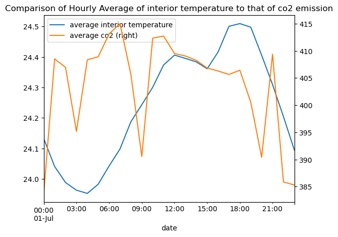
hourly_ele = ts.hourly('2020-07-01 00:00:00', '2020-07-02 00:00:00', ele)
ele_mean = avg_data(hourly_ele, 'average energy usage')
combined_ele_temp = ele_mean.merge(int_temp_mean.head(24), on = 'date')
fig, ax = plt.subplots()
combined_ele_temp.plot(x = 'date', y = 'average interior temperature', ax = ax)
combined_ele_temp.plot(x = 'date', y = 'average energy usage', ax = ax, secondary_y = True)
plt.title('Comparison of Hourly Average of interior temperature to that of energy usage');
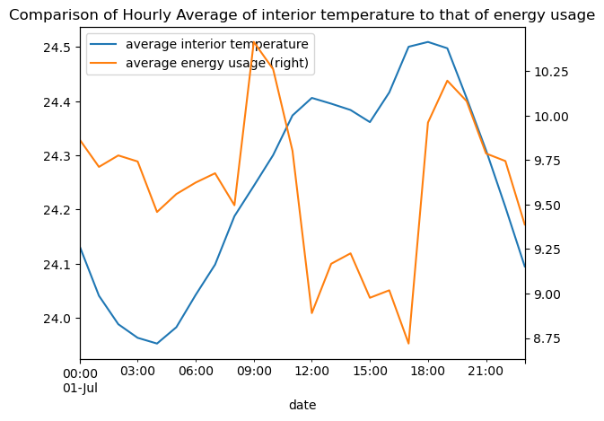
combined_ele_co2 = ele_mean.merge(co2_mean.head(24), on = 'date')
fig, ax = plt.subplots()
combined_ele_co2.plot(x = 'date', y = 'average co2', ax = ax)
combined_ele_co2.plot(x = 'date', y = 'average energy usage', ax = ax, secondary_y = True)
<AxesSubplot: >